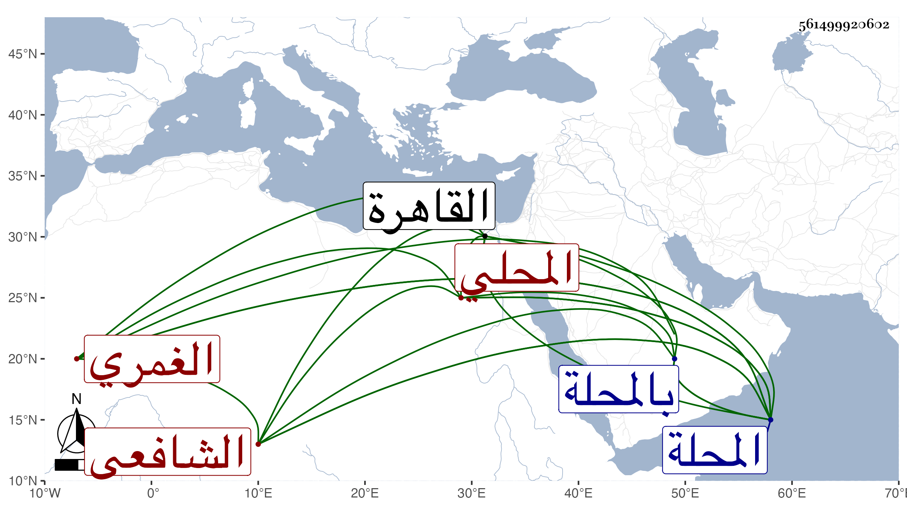

0902Sakhawi.DawLamic.ITO20230111-ara1.EIS1600.561499920602
Biography ID: 561499920602
162
محمد بن أحمد بن محمد بن عمر فتح الدين أبو الفتح بن الشيخ أبي العباس الغمري الأصل المحلي الشافعي الماضي أبوه وكل منهما بكنيته أشهر . ولد في رابع عشر رمضان سنة أربع وخمسين وثمانمائة بالمحلة وحفظ القرآن والمنهاجين الفرعي والأصلي وعرض على جملة الجماعة بل وسمع مني ومن الشاوي والقمصي وآخرين ومما سمعه على القول البديع وقرأ دروسا في التقريب للنووي واشتغل على الشهاب بن المصري في الفقه وعليه وعلى أبي عبد الله التونسي في العربية بل قرأ دروسا في الفقه على الفخر المقسي وكذا أخذ فيه وفي النحو عن الشرف البرمكيني حين سافر إليهم المحلة وفيهما وفي الأصول عن الشهاب بن الأقيطع وأكثر من ملازمته وحضر عند الكمال بن أبي شريف والبدر بن القطان والأبناسي وابن قاسم وزكريا وغيرهم ، وخلف والده حين قطن القاهرة في المحلة وصار رأسا وله مزيد توجه إلى الاشتغال والمذاكرة .
